Online University Student Database: Project Reflection
27 Jul 2022Online University Student Database
Introduction/Project Summary
Objectives
The purpose of the Online University Student Database is to provide administrators with the capability to enter a wide variety of data points for incoming students. The GUI will allow the user to enter information (student name, home address, social security number, date of birth, picture ID, declared major, degree program, grades, instructor information, create and assign courses to students and instructors, enter and process tuition payments, etc.) The data entered will allow users to generate various reports based on specified criteria (student grade reports, tuition due, payments, enrolled classes, etc.).
Overview
Project Title: Online University Student Database Customers: Student Affairs department Developers: Allesandra Sams-Jones Users: Admissions advisors, academic advisors, financial advisors, Project Manager: Professor Scott Cordle
System Description
System Requirements This database is designed for laptop and desktop use. All potential users must have Microsoft Access installed on their workstations. Major Feature Specifications
- Users will be able to enter all data into a GUI. That data will be available immediately to all approved users.
- Data will only be accessible to admissions advisers, academic advisers, and their leaders based on role-based security constraints.
- Various elements can be entered and tracked included, but not limited to student personal/contact information, grades, enrolled courses, financial obligations, instructor class assignments, etc.
- Users will be able to export/email reports in various formats.
System Diagram
Relationships table (Appendix A)
Hardware Overview Diagram
Hardware diagram (Appendix B)
Software Overview Diagram
No software diagram is needed because the entire database is contained within Microsoft Access.
Economical, technical and time constraints
This deliverable has a 5-week time frame and a budget of $10,500. Any additional requirements outside of the stated scope would cause the project to exceed budgetary and time constraints. All requirements can be met within Microsoft Access. Additional requirements that fall outside of Access will cause the project to exceed the technical constraints in addition to the budgetary and time constraints.
Hardware Detailed Implementation
This database was designed using Microsoft Access. The hardware required will be either a laptop or desktop computer.
Software Detailed Implementation
This is a Microsoft Access database, specifically, Access 2016 Version 2206 Build 16.0.15330.20260. The user must have Microsoft Access installed on his/her computer. The user will be granted access to the folder on the drive where the front end of the databased is housed.
Test/Evaluation Experimental Procedure and Analysis of Results
Database Security
Before any university employee can access the database, the database administrator will need to enter roles and access levels in the Access Level table, then enter users and their role-based access levels in the User table. This is accessed by completing the security requirements, then choosing the Database Security Portal on the main menu. ##### Student Admissions As students are admitted into the university, the admissions user will open the database. The first screen that appears is the login screen (Appendix C). The user will enter the username and password, and click the LOGIN button to open the menu. If the wrong password is entered, an error message (Password does not match, please re-enter) is generated. If the user doesn’t have proper clearance another error, (You are not authorized to access this form) is generated. Upon verification of ID, the admissions employee will access the main menu (Appendix D) and choose the Student Admissions portal (Appendix E) and will enter all of the required data elements and assign a student ID to the new student. Admission ID is automatically generated and is the primary key. ##### Enroll in Classes The course enrollment user will follow the same password verification process, and from the menu, open the Enrollment Portal (Appendix F), choose the Student ID from the drop-down box, and enter each course the user will take. It prefills the degree program and declared major to assist the user in determining which classes to enroll the student in. For ease of use, there are tabs provided with the course lists for all degree programs offered by the university. ##### Enter Grades Instructors will follow the same password verification process, open the Enter Course Grades Portal (Appendix G) and, within the list of classes being taken currently, locate their student. He/she can enter the grades for students, change the status from Current to Completed, then exit the form. ##### Create Instructors The Create Instructors Portal (Appendix H) allows the human resources employee the capability to enter a new instructor’s name, rank, and bi-weekly salary. The primary key is Instructor ID, which is created by the user. The annual salary is a calculated field based on what is entered in the bi-weekly salary field. ##### Create Courses The Course Creation Portal (Appendix I) allows the user, after completing the password verification process, to create a course by entering the course ID, course name, credit hours, prerequisite, and assign an instructor. After saving the record(s) the form can be exited. ##### Process Tuition Payments The Tuition Payments Portal (Appendix J) allows the user to enter tuition payments received from the student or other entities. The system generates a payment ID and a drop-down box locates the student ID. The user enters the pay date, pay method, authorization or check number (if received), credit card type (if needed), and the payment amount. After each transaction is saved, the user can close the form/database. ##### Student Account Ledger The Student Account Ledgers Portal (Appendix K) allows the finance employee to review the student financial statement. The user has two report options: review all students or choose a specific student. When choosing a specific student’s report, the student’s home and school email are prefilled in order to provide that information to the user if they prefer to email the report to the student. ##### Student Grade Report The Student Grade Report (Appendix L) provides a report for each student showing their list of classes, the grade received, the quality points, and GPA. ##### Societal impact of project including legal and ethical considerations
There are potential legal and ethical considerations to consider with this database. Although each portal is password protected, there could be issues when an employee is also a family member of a student. A conflict of interest could arise if that employee has the capability to alter student tuition payments or change student grades to benefit their family member. ##### Conclusions
No additional hardware is needed for this software at this time. Users may choose to access the database from a laptop or a desktop computer. The database has been split so that the front end can be placed on the user’s workstation; the backend is housed on a network drive. ##### Recommendations for Future Work
There are a number of enhancements that can be made as the university’s needs change: 1. If, at any point, the university decides to offer housing, the database could be updated to include that information. 2. There is potential to expand Human Resources’ footprint within the database by adding employee payroll and accounting data. 3. Create a system log table that documents changes made by all employees 4. Lock down student records when an employee attempts to access them. 5. Move the database to a platform that supports mobile phone access.
References
EduWorld, P. (n.d.). Create a Login Form in Access Using Macro Event. Retrieved from You Tube Web site: https://www.youtube.com/watch?v=FxUFryv3OGg
Eye, T. G. (n.d.). How to Create Login Form with Security Type in Access Database. Retrieved from You Tube Web site: https://www.youtube.com/watch?v=KQJImKNH0fA
Microsoft, Inc. (2013, May 31). Answers.Microsoft. Retrieved from Pop-up / modal forms not showing!: https://answers.microsoft.com/en-us/msoffice/forum/all/pop-up-modal-forms-not-showing/91d4e36f-7bd6-4186-babf-8ef572de64ce
Ross, R. (n.d.). How to Use the AutoSize Form Property in Microsoft Access to Keep Your Forms at the Size You Want. Retrieved from You Tube Web site: https://www.youtube.com/watch?v=5o0JuIJy_CM
Ross, R. (n.d.). How to Use the MsgBox Command in Microsoft Access VBA to Create an “Are You Sure?” Prompt. Retrieved from You Tube Web site: https://www.youtube.com/watch?v=xrhZiuCyyjc&t=367s
Ross, R. (n.d.). Simple Security for Microsoft Access Databases. Hide Tables. Disable Ribbon. Make ACCDE File. Retrieved from You Tube Web site: https://www.youtube.com/watch?v=8G7oqRVeVDs&t=727s
Tutor, T. O. (n.d.). How To Calculate Your GPA In College. Retrieved from You Tube Web site: https://www.youtube.com/watch?v=qYHsThZWydY
van Thiphout, T., Diamond, S., Wood, P., & Bardinelli, P. (n.d.). Login Security Using Access VBA. Retrieved from Access Security Blog
Appendix
Appendix A
Relationships table
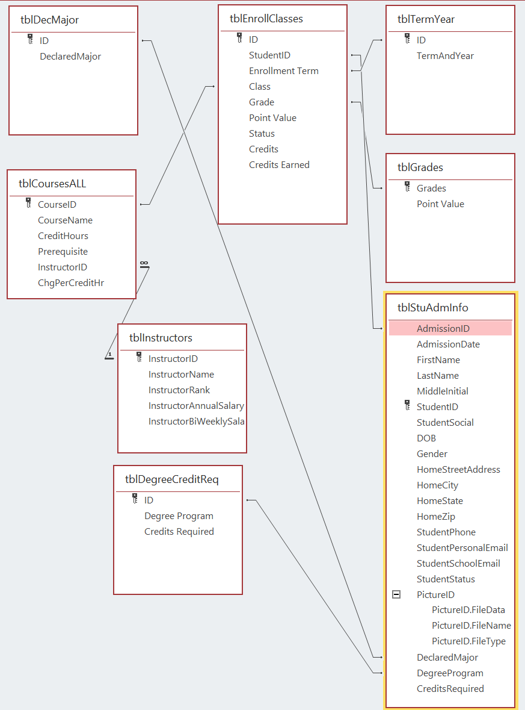
Appendix B
Hardware diagram
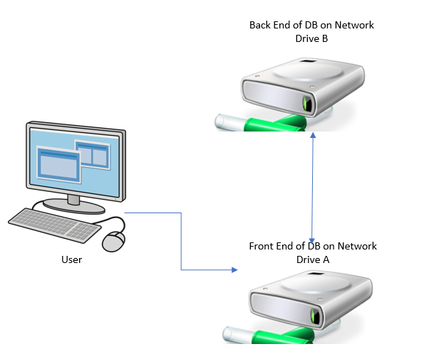
Appendix C
Login screen
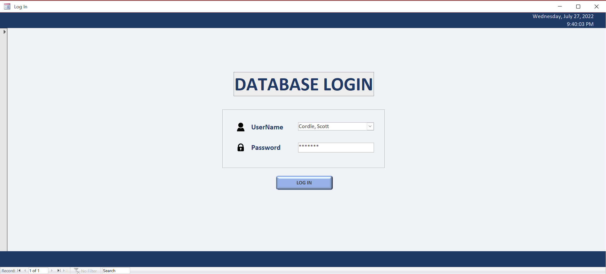
Appendix D
Main Menu
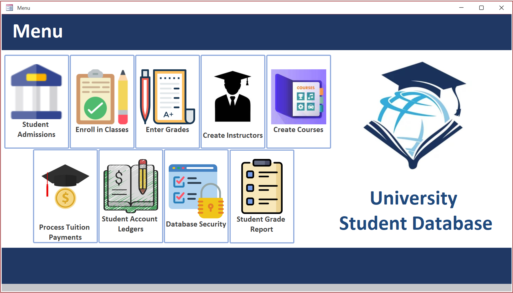
Appendix E
Student Admissions Portal

Appendix F
Enrollment Portal
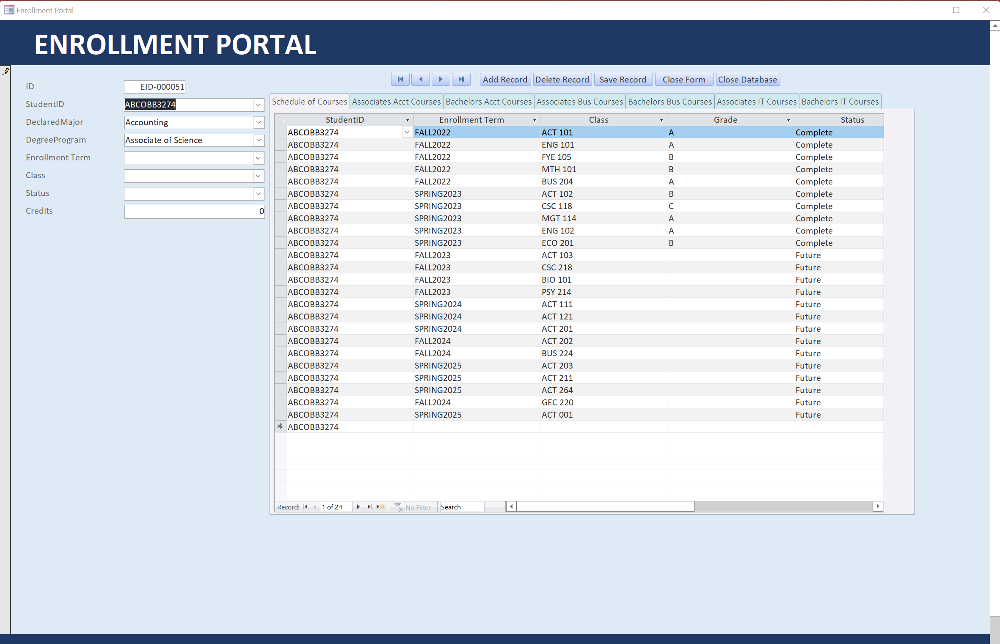
Appendix G
Course Grading Portal
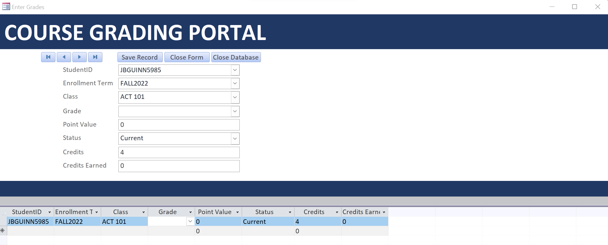
Appendix H
Instructor Data Portal
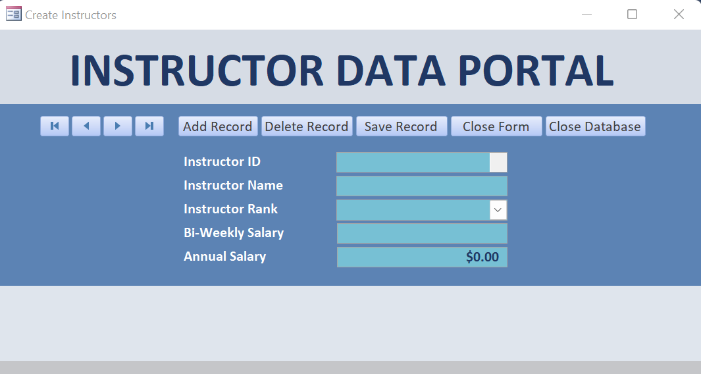
Appendix I
Course Creation Portal
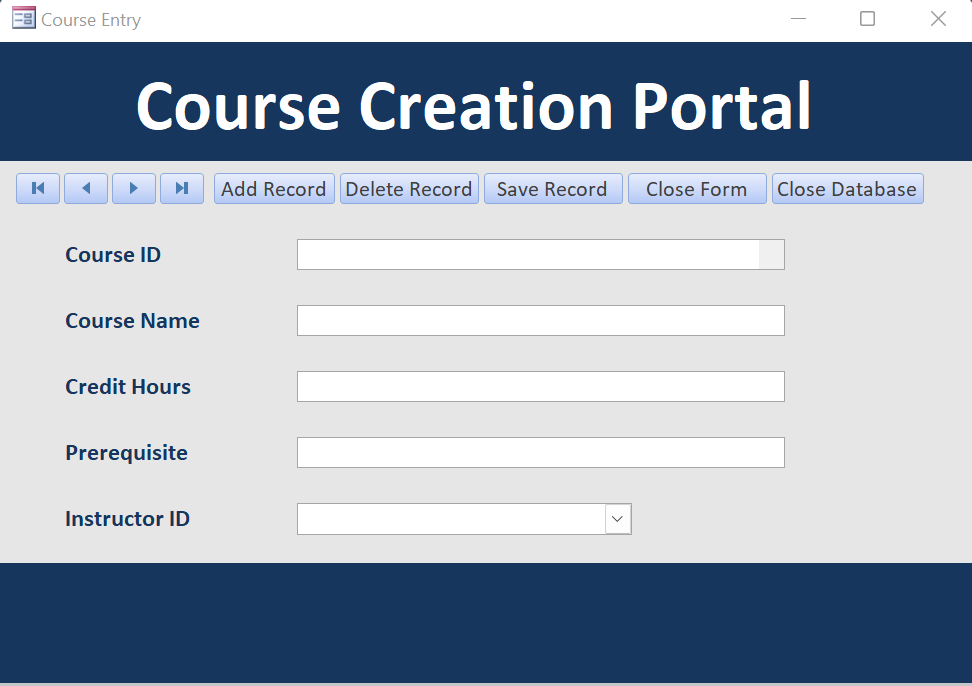
Appendix J
Tuition Payment Portal
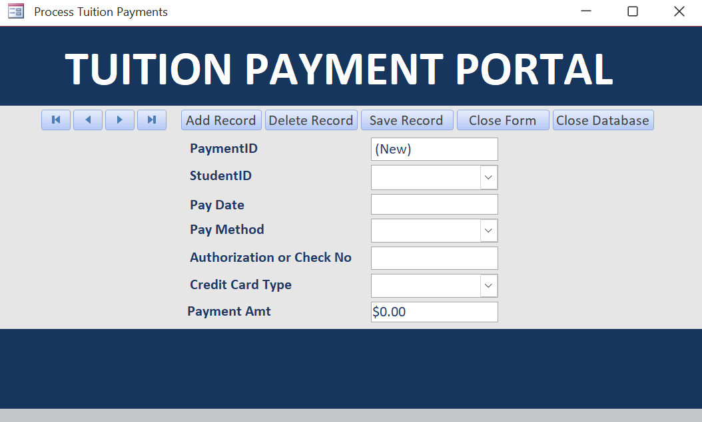
Appendix K
Student Account Ledger Portal
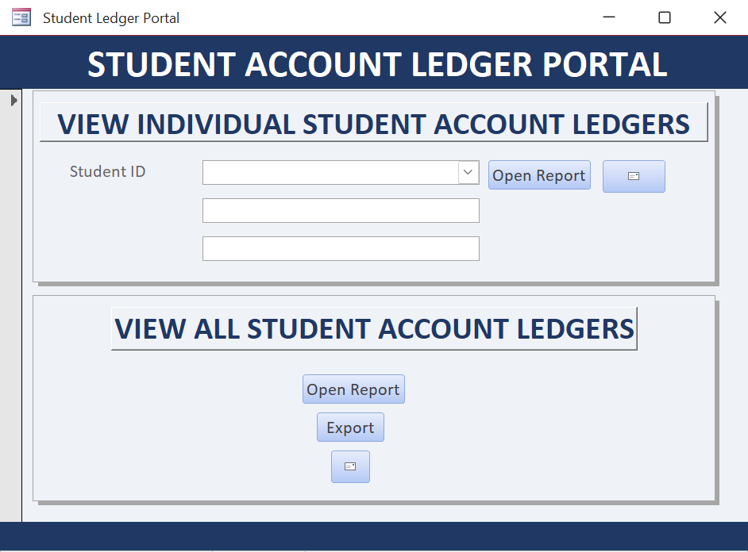
Appendix L
Student Grade Report
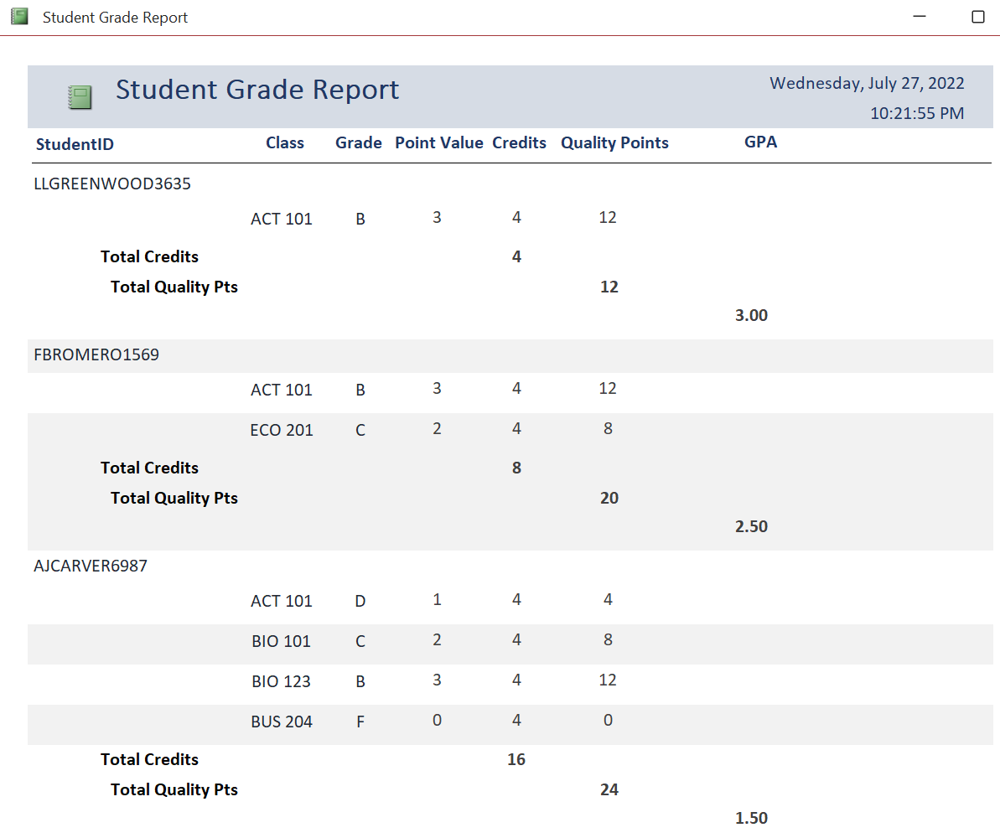
Appendix M
Software Installation Instructions
Users will be granted access to the drive that houses the front end of the database. The user will drag the database from the drive onto his/her desktop. Placing the database on the desktop will allow the user to make minimal customizations that won’t impact other users. If his/her copy gets corrupted, a fresh copy can be retrieved from the drive and placed on the desktop again.
Appendix N
Acknowledgements
Many thanks to everyone that assisted me in delivering this product. Professor Scott Cordle offered valuable counsel from start to finish. Alexandria Sams and James Jones provided valuable insight to help ensure this database design delivered a professional appearance and flow. All of your contributions are very much appreciated.